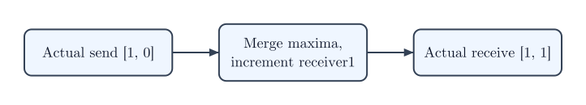
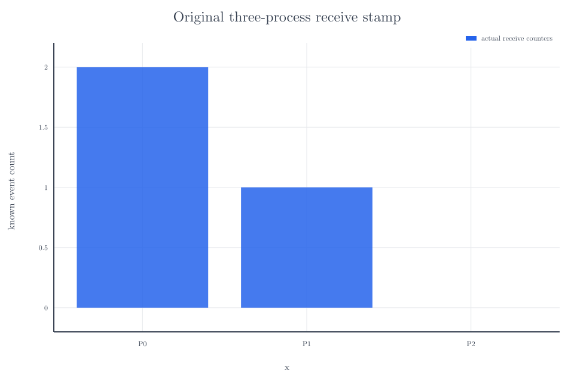
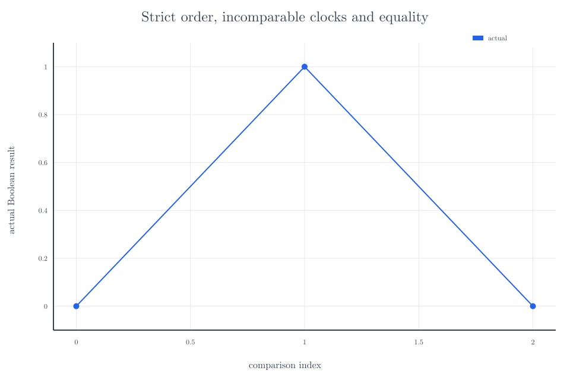
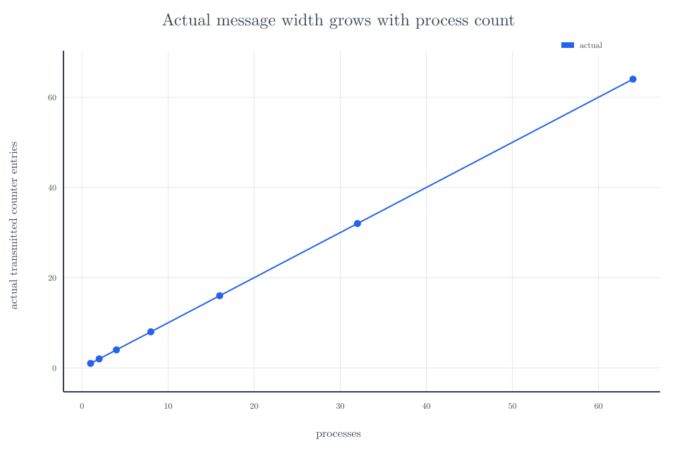

Vector clocks: actual send/receive state and causal order
Abstract
Distributed processes need to distinguish causally related events from concurrent ones without a shared physical clock. A vector timestamp records the event counts known from every process.
The method
A local/send event increments its own component; receive takes componentwise maximum with the message then increments the receiver component. Under the full protocol, each component records the latest known count for its process. Thus a→b implies V(a)≤V(b) with one strict component; conversely the known-count interpretation reconstructs a causal chain. Distinct incomparable vectors represent concurrency. Equal vectors are neither strict order nor concurrency. Cost and message size are O(number of processes).
Simple worked example
#include <dm/dm.hpp>
int main() {
namespace a = dm::algorithms;
namespace g = dm::graphics;
std::filesystem::create_directories("build");
a::VectorClock sender(2), receiver(2);
auto message = a::vc_send(sender, 0);
a::vc_receive(receiver, 1, message);
std::print("| actual send | actual receive | happens before |\n|---|---|---|\n|`{}`|`{}`|{}|\n",
message.v, receiver.v, a::vc_happens_before(message, receiver));
g::Diagram concept_diagram(48, 1100);
concept_diagram.node("n0", {0, 0}, std::format("Actual send {}", message.v));
concept_diagram.node("n1", {5, 0}, "Merge maxima, increment receiver1");
concept_diagram.node("n2", {10, 0},
std::format("Actual receive {}", receiver.v));
concept_diagram.edge("n0", "n1").edge("n1", "n2");
concept_diagram.save_svg("build/vector_clock_tiny.svg");
}| actual send | actual receive | happens before |
|---|---|---|
[1, 0] | [1, 1] | true |

The retained original experiment
#include <dm/dm.hpp>
int main() {
namespace a = dm::algorithms;
namespace g = dm::graphics;
std::filesystem::create_directories("build");
a::VectorClock c0(3), c1(3), c2(3);
a::vc_event(c0, 0);
auto A = c0;
auto S = a::vc_send(c0, 0);
a::vc_receive(c1, 1, S);
auto R = c1;
a::vc_event(c2, 2);
auto C = c2;
std::print("| event | actual vector |\n|---|---|\n|A local|`{}`|\n|S send|`{}`|\n|R receive|`{}`|\n|C " "independent|`{}`|\n\nA before R {}; C concurrent R {}.\n",
A.v, S.v, R.v, C.v, a::vc_happens_before(A, R),
a::vc_concurrent(C, R));
auto p =
g::RPlot::barplot({double(R.v[0]), double(R.v[1]), double(R.v[2])},
{"P0", "P1", "P2"}, "actual receive counters",
{37, 99, 235});
p.title("Original three-process receive stamp").y_label("known event count");
p.save_svg("build/vector_clock_original.svg");
}| event | actual vector |
|---|---|
| A local | [1, 0, 0] |
| S send | [2, 0, 0] |
| R receive | [2, 1, 0] |
| C independent | [0, 0, 1] |
A before R true; C concurrent R true.

Checking the theory and controls
#include <dm/dm.hpp>
int main() {
namespace a = dm::algorithms;
namespace g = dm::graphics;
std::filesystem::create_directories("build");
a::VectorClock a0(2), b(2);
a::vc_event(a0, 0);
a::vc_event(b, 1);
std::vector<double> x{0, 1, 2}, y{double(a::vc_happens_before(a0, b)),
double(a::vc_concurrent(a0, b)),
double(a::vc_concurrent(a0, a0))};
std::print("| comparison | result |\n|---|---|\n|incomparable before|{}|\n|incomparable " "concurrent|{}|\n|equal concurrent|{}|\n",
bool(y[0]), bool(y[1]), bool(y[2]));
auto p = g::RPlot::create();
p.line(x, y, "actual", {37, 99, 235}, 2);
p.points(x, y, "", {37, 99, 235}, 5);
p.title("Strict order, incomparable clocks and equality").x_label(
"comparison index").y_label("actual Boolean result");
p.save_svg("build/vector_clock_controls.svg");
}| comparison | result |
|---|---|
| incomparable before | false |
| incomparable concurrent | true |
| equal concurrent | false |

Sensitivity and selected work
#include <dm/dm.hpp>
int main() {
namespace a = dm::algorithms;
namespace g = dm::graphics;
std::filesystem::create_directories("build");
std::vector<double> x, y;
std::print("| process count | message vector entries | actual own counter |\n|---:|---:|---:|\n");
for (std::size_t n : {1, 2, 4, 8, 16, 32, 64}) {
a::VectorClock c(n);
auto m = a::vc_send(c, n - 1);
std::print("|{}|{}|{}|\n", n, m.v.size(), m.v.back());
x.push_back(n);
y.push_back(m.v.size());
}
auto p = g::RPlot::create();
p.line(x, y, "actual", {37, 99, 235}, 2);
p.points(x, y, "", {37, 99, 235}, 5);
p.title("Actual message width grows with process count").x_label("processes").y_label("actual transmitted counter entries");
p.save_svg("build/vector_clock_work.svg");
}| process count | message vector entries | actual own counter |
|---|---|---|
| 1 | 1 | 1 |
| 2 | 2 | 1 |
| 4 | 4 | 1 |
| 8 | 8 | 1 |
| 16 | 16 | 1 |
| 32 | 32 | 1 |
| 64 | 64 | 1 |

Interpretation and limits
Counters are bounded signed integers, so the increment that would exceed INT_MAX throws before mutation. Shape mismatches, invalid process IDs and manually introduced negative counters also throw. Caller synchronization is required. Comparing arbitrary edited vectors alone cannot establish real-world causality; that interpretation depends on the event protocol.
The complete editable C++ programs save figures locally; results contain ordinary computed Markdown. Selected counters describe actual producer operations, excluding validation when stated.
References
- Fidge and Mattern vector timestamps; the full event protocol and componentwise-order proof are stated above.
Verified in the shared ten-document batch: 84 scoped native cases;20 directly
instrumented ASan/UBSan cases;45 executable public examples;127/127 definitions
across12 full scopes;10 hovers;2400 independent records/9344 checks;9 frozen
valid-input families plus the unchanged shared merge producer;11
checkout/installed standalone headers and linked ten-family consumer;40 executed
programs and40 inspected figures with both exports. Receipts:
build/mepml-conversion/batch-414-423/.